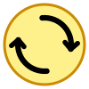
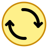
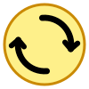
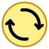

[기준] 작성해주신 코드 (U0)
-5도 회전된 직각 촉 / 몸통 6.2px

크기조절 핸들 (초록)
직각 폴리라인 촉
보내주신 SVG 코드의 -5도 반시계 회전 직각 화살촉 느낌을 바탕으로, 회전각(-3° ~ -8°), 볼드 두께 강화, 원호 길이 연장 등을 조정한 5종의 샘플입니다.

-5도 회전 촉
몸통 6.2px, 촉 5.5px
보내주신 그대로 100% 반영

-8도 추가 회전
바깥쪽 날개가 원 둘레와
더욱 나란해지는 각도
-6도 미세 튜닝
-5도와 -8도의 중간
가장 절묘한 대칭 밸런스

몸통 6.8px + 촉 6.0px
-5도 회전 각도 유지 +
두께를 더 굵고 묵직하게

원호 115도 연장
몸통 길이가 살짝 더 길고
-5도 회전 촉 적용
-3도 회전
살짝 덜 회전시켜
부드러운 날개 각도
U0 (보내주신 코드) + 크기조절 : -5도 회전으로 화살촉 양날개의 시각적 균형이 안정적임
U5 (-6도 회전) + 크기조절 : 바깥쪽 날개와 안쪽 날개의 대칭 밸런스가 더욱 최적화됨
U3 (몸통 6.8px 볼드) + 크기조절 : 두께감이 확실하고 시원시원함